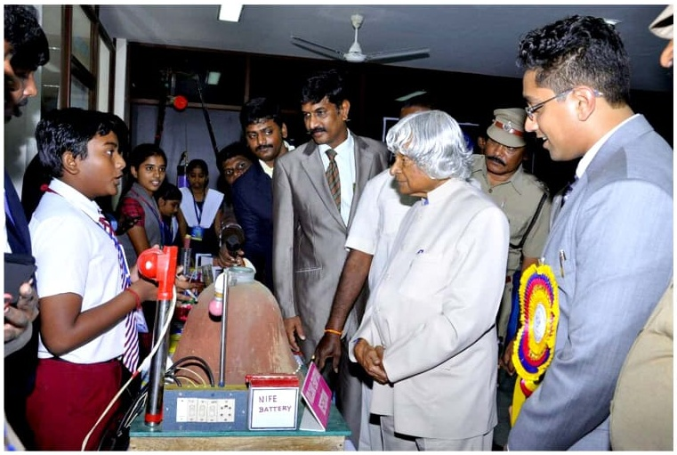

Sa. Sivasooryaa
Founder, Soil Steps · Innovator in Agricultural Science & Engineering
Before Soil Steps, Sivasooryaa spent his school years building agricultural innovations for small farmers — work recognised at Rashtrapati Bhavan, by the National Innovation Foundation, and through Space Kidz India's NSLV KALAM programme. This page is a verified record of that journey, drawn from his personal archive of certificates and photographs.
2015 A school science exhibit on volcanic eruption, and a meeting with Honorable former President late Dr A.P.J. Abdul Kalam — the moment that set a young innovator's path in motion.
- Born
- 24 July 2001 · Kovilapatti, Thoothukudi district, Tamil Nadu
- Field
- Agricultural Science & Engineering, Innovation
- Signature project
- Solar/battery-operated Agri Wetland Leveller & Trimmer for small farmers
- Recognised by
- President of India (twice), National Innovation Foundation, Govt. of Tamil Nadu, Govt. of Rajasthan
Participated in Agni Ignite Ezham Arivu - National level science competition and got opportunity to present infront of Honourable former president, space scientist late DR. A.P.J Abdul Kalam
On 18 July 2016, Sivasooryaa won the Young Scientist India 2016 title at the Grand Finale organised by Space Kidz India, in association with the Abdul Kalam International Foundation and the Russian Center of Science and Culture — for his eco-friendly, solar/battery-operated Agri Wetland Leveller for small farmers. The Government of Tamil Nadu had separately awarded his innovation first prize in a state-level competition, and the win was covered by the Deccan Chronicle.
On 14 November 2016 — Children's Day — President Pranab Mukherjee presented Sivasooryaa with the National Child Award for Exceptional Achievement 2016 (Silver Medal, Innovation) at Rashtrapati Bhavan, New Delhi, alongside award winners from across India, in a ceremony organised by the Ministry of Women and Child Development.
The certificate, medal, and the commemorative booklet from that day — including his official citation and messages from the President and Prime Minister on the occasion — are preserved below.
The booklet's bio entry (in Hindi and English) confirms the details on this page — including the "Volcanic Eruption" exhibit, the Tamil Nadu state prize, and the Russia training selection.
His Young Scientist India win included a 10-day observation training in Russia, organised with the Russian Space Research and Cultural Academy. Over 16–18 October 2016 he visited the Moscow Aviation Institute for an aerospace workshop, flew in a wind tunnel, and completed a familiarisation course at Space Camp Cosmocenter in Star City — the certificate for which is signed by cosmonaut Salizhan Sharipov.
On 22 December 2017, the National Innovation Foundation – India honoured him with the Dr APJ Abdul Kalam IGNITE Award 2017 for his idea of a solar-powered wetland leveller and trimmer. The same year brought a run of further recognition: the Karma Yogi Kalam Award and Rolling Trophy from the Governor of Pondicherry (6 August 2017) as lead of the junior NSLV KALAM team; the Abdul Kalam Award from the Tirunelveli District Collector (1 July 2017); and the TNMEET Senior Achievers Award.
Worked at Space Kidz India under the leadership of Dr. Srimathy Kesan, contributing to the development of a space-agriculture-focused payload, which was showcased and launched at Rajasthan DigiFest.
Read more, or connect directly
This archive draws on Sivasooryaa's personal record of certificates and photographs. For anything beyond what's shown here, his LinkedIn profile is the best place to reach him.
View LinkedIn profile